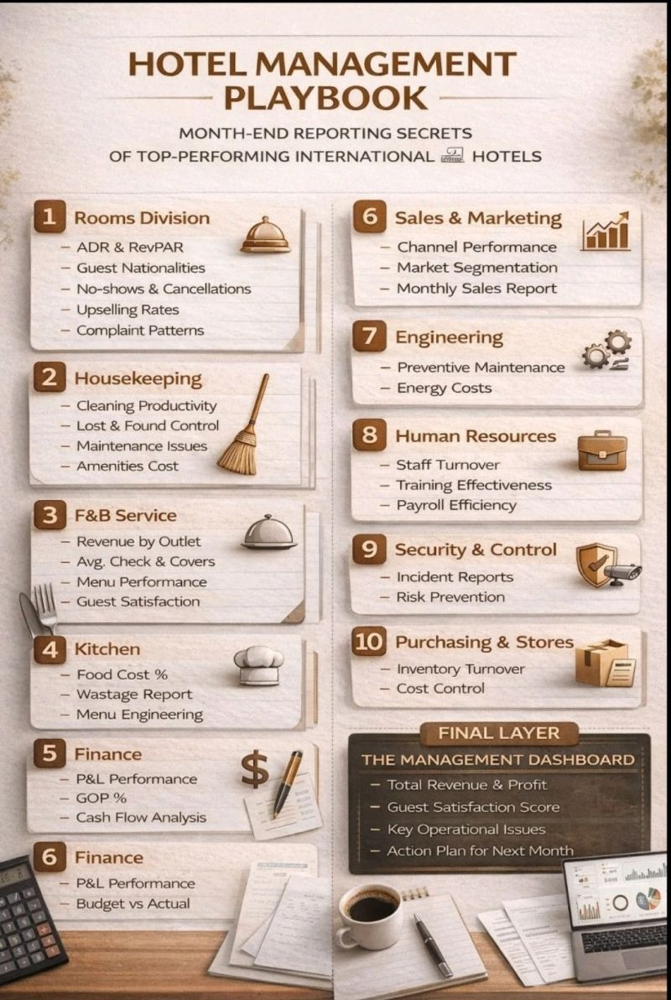

Month-End Reporting Every Hotel Manager Must Master
A successful hotel is not judged solely by its occupancy or the number of guests it serves. Its true performance is measured by how effectively management converts revenue into profit, controls operational costs, maintains guest satisfaction, and prepares for future growth.
The month-end reporting cycle is one of the most important responsibilities of every General Manager, Operations Manager, Financial Controller and Department Head. It provides a complete picture of where the business performed well, where it fell short, and what corrective actions are required before the next accounting period begins.
Throughout my hospitality career working in hotels, resorts, cruise lines and multi-unit food & beverage operations, I have found that the strongest managers never wait until problems become crises. They monitor their numbers every day, compare them with operational standards and use month-end reports to drive informed business decisions.
"Good managers manage today's operations. Great managers prepare next month's success before this month ends."
— Nigel A. Thomas
A month-end report is a comprehensive management document summarising every operational and financial activity that occurred during the reporting period. Rather than simply presenting figures, the report explains why those figures occurred and what actions management intends to take moving forward.
Professional reports normally include:
| Department | Main Review Areas |
|---|---|
| Rooms Division | Occupancy, ADR, RevPAR, room revenue, market segmentation |
| Front Office | Guest arrivals, departures, walk-ins, upgrades, no-shows |
| Housekeeping | Room productivity, cleaning standards, linen usage |
| Food & Beverage | Sales, food cost, beverage cost, menu engineering |
| Kitchen | Waste control, purchasing, inventory, recipe costing |
| Engineering | Preventive maintenance, breakdowns, capital expenditure |
| Human Resources | Labour cost, turnover, recruitment, training |
| Finance | Profit & Loss, balance sheet, cash flow, budget comparison |
Every hotel owner wants answers to five simple questions:
A professional month-end report answers every one of these questions using facts, operational analysis and measurable performance indicators.
Never submit numbers without explaining the reasons behind them. Owners are interested in management decisions—not just financial figures. A great report tells the story behind every important KPI.
Experienced hotel managers don't begin preparing reports on the last day of the month. Preparation starts on Day One. Daily revenue reports, flash reports, occupancy forecasts, food cost summaries and payroll analysis are reviewed continuously so there are no surprises at month-end.
| Week | Primary Focus |
|---|---|
| Week 1 | Budget monitoring and occupancy forecasting |
| Week 2 | Food cost, beverage cost and labour analysis |
| Week 3 | Department KPI review and corrective actions |
| Week 4 | Final reporting, management meeting and forecasting |
One mistake many new managers make is believing that month-end reporting is only about accounting. It isn't. Month-end reporting is fundamentally about leadership. The report demonstrates whether management has anticipated challenges, responded effectively to operational issues, motivated department heads, maintained service standards, and delivered value to owners and guests alike. The financial results are simply the outcome of hundreds of management decisions made throughout the month.
Occupancy is one of the first numbers every owner looks at, but experienced managers know that a high occupancy percentage alone does not guarantee profitability. A hotel operating at 95% occupancy while selling rooms below market rate may earn less than another hotel operating at 78% occupancy with stronger average room rates. Successful managers therefore analyse occupancy together with ADR, RevPAR and total revenue generation before reaching conclusions.
Occupancy should always be compared against:
Never celebrate high occupancy without analysing profitability. Busy hotels do not always become profitable hotels.
Average Daily Rate measures the average selling price of occupied guest rooms. It reflects the hotel's pricing strategy and revenue management effectiveness. Managers should review ADR by room category, booking channel, market segment and corporate agreements.
| ADR Analysis | Questions Every Manager Should Ask |
|---|---|
| Corporate Business | Are negotiated rates still profitable? |
| Online Travel Agents | Are commissions reducing profitability? |
| Direct Bookings | How can direct reservations be increased? |
| Group Business | Did group discounts produce additional revenue? |
RevPAR combines occupancy and ADR into one powerful performance indicator. Rather than measuring room sales independently, RevPAR evaluates how effectively the hotel generates revenue from every available room. Increasing RevPAR requires balancing occupancy with pricing rather than sacrificing one for the other.
Increasing occupancy by lowering room rates is not revenue management. Increasing revenue while maintaining market value is.
Owners are ultimately interested in Gross Operating Profit because this figure demonstrates whether management is converting revenue into operational success. Two hotels with identical revenues can produce dramatically different profits depending on labour control, purchasing discipline, waste management and departmental efficiency.
During month-end reporting every General Manager should explain:
The Front Office creates the guest's first and last impression. Performance evaluation extends beyond check-in efficiency. Managers should analyse reservation conversion, room upgrades, guest complaints, average check-in time, billing accuracy, cash handling, late departures, no-show percentages and guest loyalty programme performance.
| KPI | Target |
|---|---|
| Guest Satisfaction | 95%+ |
| Billing Accuracy | 99% |
| Average Check-in Time | Under 5 Minutes |
| Room Upgrade Revenue | Increasing Monthly |
| No Show Percentage | Below Budget |
Housekeeping influences both guest satisfaction and operating costs. The month-end report should analyse productivity, room turnaround times, deep cleaning schedules, guest complaints, linen replacement, laundry expenses and chemical consumption. Preventive planning reduces emergency expenses and maintains brand standards.
A clean room sells itself. An unprepared room damages both reputation and future revenue.
Food and Beverage often represents one of the largest revenue opportunities within hotels. Month-end analysis should evaluate:
Revenue should never be analysed independently. Every increase in sales must also be examined alongside profitability. A restaurant generating high revenue while producing poor gross profit requires immediate corrective action.
Kitchen profitability depends upon purchasing discipline, recipe standardisation, portion control, waste reduction and inventory accuracy. Professional kitchens monitor every ingredient from receiving through production to final service.
| Control Area | Management Objective |
|---|---|
| Purchasing | Approved suppliers and negotiated pricing |
| Receiving | Quality inspection and quantity verification |
| Storage | FIFO and temperature compliance |
| Production | Recipe adherence and portion control |
| Waste | Daily recording and corrective action |
Labour is usually the largest controllable operating expense. Managers should review staffing levels, department scheduling, overtime, casual labour, annual leave balances, training productivity and payroll variance. Rather than reducing staff indiscriminately, professional managers align staffing levels with occupancy forecasts and business demand.
Great hotel managers reduce unnecessary labour, not guest service.
Effective purchasing protects profitability. Every month-end report should include supplier performance, inventory valuation, stock variances, slow-moving inventory, obsolete stock and purchasing savings achieved through negotiation. Managers should regularly review supplier pricing and compare quotations to ensure continued value for money.
The strongest hotel managers do not simply read reports. They understand the operational story behind every number, coach department heads, implement corrective action quickly and continuously improve profitability without compromising guest satisfaction. That leadership mindset is what separates competent managers from exceptional ones.
At the end of every accounting period, senior management must review the hotel's Profit & Loss Statement (P&L). While accountants prepare the financial statements, it is the General Manager's responsibility to understand every figure and explain the operational reasons behind the results. The P&L is more than a financial document—it is the operational report card of the entire hotel.
A professional review should analyse:
Every month-end report should compare actual performance against the approved budget. Where variances exist, management must explain:
| Variance | Management Action |
|---|---|
| Revenue Below Budget | Increase sales activity, improve marketing and review pricing. |
| Food Cost Above Budget | Review purchasing, recipes, waste and portion control. |
| Labour Above Budget | Improve scheduling and align staffing with occupancy. |
| Maintenance Above Budget | Review preventive maintenance programme. |
Professional managers do not simply close the books. They immediately begin planning the next operating period. Forecasting should include expected occupancy, group bookings, seasonal demand, major local events, staffing requirements, cash flow, planned maintenance, marketing initiatives and projected profitability.
Once reports are completed, every Department Head should present a concise review of their month's performance. Each presentation should answer five questions:
Meetings should focus on solutions rather than blame. The objective is continuous improvement across every department.
Numbers identify problems. Leadership solves them. Outstanding hotel managers combine financial discipline with operational excellence.
| Task | Status |
|---|---|
| Revenue Analysis Completed | ☐ |
| ADR & RevPAR Reviewed | ☐ |
| Department Reports Submitted | ☐ |
| Food Cost Reviewed | ☐ |
| Beverage Cost Reviewed | ☐ |
| Payroll Verified | ☐ |
| Inventory Completed | ☐ |
| Maintenance Report Reviewed | ☐ |
| Guest Satisfaction Analysed | ☐ |
| Budget Variances Explained | ☐ |
| Forecast Prepared | ☐ |
| Management Meeting Completed | ☐ |
Formal reports are produced every month, but key operational indicators should be reviewed daily and weekly.
Department Heads prepare their individual reports, Finance consolidates financial information and the General Manager presents the overall management analysis.
No single KPI tells the complete story. Occupancy, ADR, RevPAR, GOP, labour cost, food cost and guest satisfaction should always be analysed together.
Absolutely. Whether a property has 20 rooms or 500 rooms, disciplined reporting improves decision making and profitability.
Nigel A. Thomas is a hospitality executive with more than three decades of international experience across hotels, resorts, cruise lines, restaurants and multi-unit food & beverage operations. His expertise includes hotel operations, leadership development, food & beverage management, profitability improvement, SOP development, cost control, hospitality training and executive mentoring. Through NigelThomas.live he shares practical operational knowledge designed to help hospitality professionals build successful careers and profitable businesses.
Exceptional hotels are not created by chance. They are built through disciplined leadership, accurate reporting, operational consistency and continuous improvement. The most successful managers never wait until the end of the month to discover problems. They measure performance daily, analyse trends continuously and use month-end reporting as a strategic management tool rather than an accounting exercise. Master the numbers, lead your people, and the results will follow.
